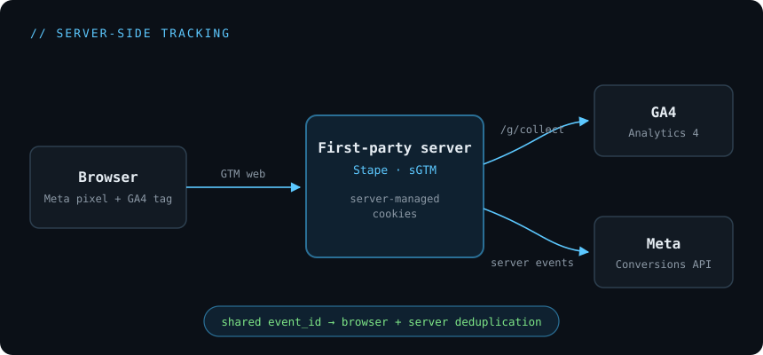

September 2026 · ~7 min read · server-side tracking, GA4, Meta CAPI

The shape of what I built: everything routed through a first-party server before it reaches GA4 and Meta.
Browser-side tracking quietly bleeds data — ad blockers, iOS/ITP, and short cookie lifetimes all eat into it. When an ad account is optimising against conversions, that missing signal shows up as worse targeting and wasted spend. This is the story of moving one website's tracking server-side to win that signal back.
The problem I was handed
For a website running Meta ads with a booking funnel, performance was soft and the ads team's instinct was that tracking — not the ads — was the weak link. Ad optimisation is only as good as the conversion data feeding it, and browser-only tracking was losing events. My job was to recover the lost data server-side and lift Meta's data quality, without breaking anything already working.
What I set out to do
- Run GA4 fully server-side behind a first-party server, so hits aren't blocked as easily and cookies live longer.
- Give Meta clean, deduplicated events — the same conversion counted once, whether it arrives from the browser or the server.
- Keep it first-party and reliable, and — critically — not create a second, conflicting source of truth.
What I built
I stood up a server-side GTM (sGTM) container on Stape.io, pointed a neutral first-party subdomain at it (region set to match where the audience actually is), and routed GA4 through it with server-managed cookies to stretch attribution. On the Meta side I consolidated the pixel and gave every event a shared event_id, mirrored into the dataLayer, which is what lets Meta match and de-duplicate browser and server events. I also enabled Google Tag Gateway so Google's own scripts load first-party, coexisting cleanly with the server container.
The hurdles — and how I got past them
Editing functions.php directly took the whole site down twice — once from smart quotes sneaking in, once from a duplicate function.
Fix: I edited over SFTP in a plain code editor (no smart-quote "help"), kept a single function, and moved JavaScript snippets into WPCode — which disables a broken snippet instead of taking the entire site with it.
The pixel showed nothing and GA4 Realtime threw repeated 499s. I nearly chased "bugs" that didn't exist — until I realised the antivirus and ad blockers on the test box were silently blocking the tracking endpoints.
Fix: verify only in a clean browser (no antivirus interception, no blockers) and via Meta Test Events. Never trust a machine that runs a blocker for tracking QA.
The first-party subdomain wouldn't get a valid certificate — requests failed with SSL errors.
Fix: the DNS record was proxied through Cloudflare. Setting the CNAME to DNS-only (grey cloud, proxy off) let the tagging server issue and serve its own certificate.
Bookings completed inside a third-party CRM widget (GoHighLevel / LeadConnector) — a cross-origin iframe the parent page can't see into. And because no email or phone was captured on-site, Meta's Event Match Quality was sitting around 6/10.
Fix: I listened for the vendor's postMessage "booking-complete" signal to fire the conversion, and started wiring the CRM directly into Meta so the booker's details flow through and lift match quality.
Digging in, I found an AWS Conversions API Gateway already live on the pixel, quietly sending deduplicated server events. Publishing a second server source (my Stape CAPI) would have double-counted conversions.
Fix: I built the Stape Meta CAPI path in parallel but left it paused — keeping one clean server source rather than two overlapping ones. Diligence over "ship it".
Stape's free tier caps at 10,000 requests a month. Go over and it disables the container — and because GA4 now points at the server, there's no client-side fallback: those hits are simply lost. It doesn't quietly revert to normal tracking.
Fix: budget for the paid tier on anything with real traffic (it also unlocks Cookie Keeper and Custom Loader for even more recovery), and treat the request cap as a monitoring item, not an afterthought.
A couple of the fiddly bits
The dedup hinges on one shared id used by every event, mirrored into the dataLayer so the server can reuse it:
// one helper, used by every event, so the browser pixel and the
// server (CAPI) can be matched and de-duplicated by Meta
window.makeEventId = function (name) {
return name + '.' + Date.now() + '.' + Math.random().toString(36).slice(2, 12);
};
fbq('init', 'YOUR_PIXEL_ID');
var eid = window.makeEventId('PageView');
fbq('track', 'PageView', {}, { eventID: eid });
// mirror the id into the dataLayer so the server side reuses it
window.dataLayer = window.dataLayer || [];
window.dataLayer.push({ event: 'meta_pageview', meta_event_id: eid });And the cross-origin booking capture — since the page can't see clicks inside the CRM iframe, I listen for its message instead:
// the booking widget is a cross-origin iframe (a CRM vendor), so the
// parent page can't see inside it — but it posts a message on success.
var booked = false;
window.addEventListener('message', function (e) {
if (!e.origin || e.origin.indexOf('leadconnector') === -1) return;
var payload = JSON.stringify(e.data || '');
if (!booked && payload.indexOf('booking-complete') !== -1) {
booked = true;
var eid = window.makeEventId('Book');
fbq('trackCustom', 'Book', {}, { eventID: eid });
}
});How I made sure it actually worked
I didn't trust "it looks fine." The server's /healthy endpoint had to return ok with a valid certificate; GTM Preview (web and server) had to show tags firing and requests arriving; GA4 DebugView/Realtime confirmed live events; Meta Pixel Helper and Meta Test Events confirmed the browser and server sides shared the same event IDs; and the Network tab confirmed GA4's /g/collect was going to the first-party subdomain with first-party cookies (FPID, FPLC, FPGSID) being set.
Where it landed
GA4 now runs fully server-side behind a first-party server; every Meta event carries a shared event_id for clean browser-to-server deduplication; first-party cookies extend attribution; and Google's scripts serve first-party alongside it. Just as importantly, the decision trail — keep the existing gateway, pause the duplicate — kept the data clean. Net result: the ads team gets more complete, better-matched conversion data to optimise against, which was the entire point of the exercise.
What I'd carry into the next build
The repeatable sequence for any site: stand up the server container, add a first-party subdomain, route GA4 through it, add a shared event_id to the pixel — and only wire a second server source if one doesn't already exist. Always check for an existing Conversions API gateway before adding another, and never QA tracking on a machine running a blocker. Server-side isn't magic; it's plumbing done carefully.